CSS
A collection of front-end code experiments on CodePen and mainly focusing on CSS Grid.
-
Stacked Cubes
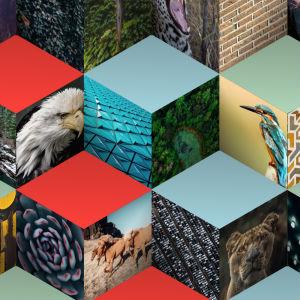
A CodePen experimenting with displaying many rows of content in an innovative way.
Uses CSS Grid with transforms and ::before and ::after selectors to add a 3D effect to a list of images.
-
Horizontal grid
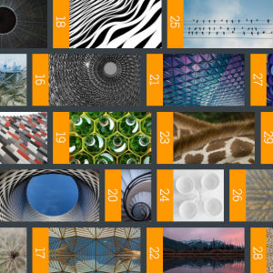
A horizontal brick layout using CSS Grid and vertical-lr writing mode to maintain a up->down then left->right dense packing.
Not a layout that would be recommended for desktop but works nicely as a horizontally scrolling mobile/tablet layout.
-
Isometric Layered Grid
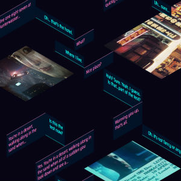
An experiment in overlaying CSS Grids to create an isometric layout. Three grids are skewed and rotated to provide an isometric framework
Content is positioned on the 3 grids to give an overlapping 3D effect.
-
CSS Grid as a mask
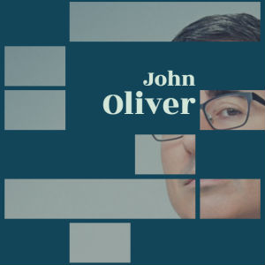
A CodePen that uses CSS Grid as a mask to recreate a design similar to this poster.
The grid contains many "filler" elements that only exist to obscure the background image from view.
-
Responsive Perspective layout
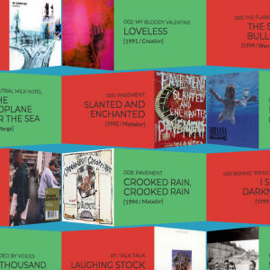
A CSS Grid layout using perspective and Y-rotation to give a 3D effect.
JavaScript is used to make sure the item styling alternates correctly as the number of items on each row changes.
-
Image Squish with CSS Grid
A morphing grid experiment using CSS Grid to provide the grid and dynamically changing the "grid-template-columns" and "grid-template-rows" attributes based on the mouse position.
Based on a Flash experiment by Yugo Nakamura
-
Rodchenko poster layout
A CSS Grid layout experiment on CodePen using CSS Grid and CSS transformations and perspective.
The layout is based on the famous 1924 poster by Alexander Rodchenko for the Gosizdat publishing house.
-
Animated lizard tiles
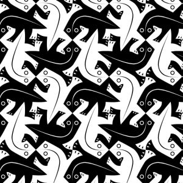
An experiment on CodePen combining CSS Grid and SVG animation using D3.js.
The tessellated lizard tiles are based on a painting by M. C. Escher.
-
Diamond Grid layout
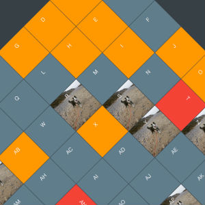
A CSS Grid layout on CodePen with a diagonal grid that fills exactly the browser window and orders the items appropriately.
The user can specify the total number of grid items and the number of items per row. JavaScript is used to resize the grid and place the items in the correct order.
-
Masonry layout with CSS Grid
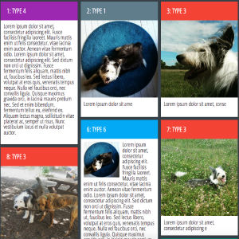
CSS Grid makes laying out content in a grid much easier and does a good job of Masonry style layouts as long as you are able to specify the size of each grid item in advance.
I wrote an example of how you can use a little bit of JavaScript to automatically resize the grid items to get a perfect Masonry layout with CSS Grid.
CSS Grid: Grid of Thrones
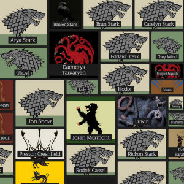
The dilligent and learned maesters at the excellent Game of Thrones wiki have documented everything you could ever need to know about Game of Thrones. This includes every character who has appeared in the show. From Daenerys Tagaryen to Othell Yarwyck to "Dwarf Hunter 2". If they speak a line or even if they are just an interesting corpse they will be on the site.
I used this data as the basis for an experiment using CSS Grid to create a grid whose elements expand to show more content when clicked.
The grid was built using D3.js to load in the data and populate the grid with content.
Data Vis
Data Vis experiments mainly using D3.js.
-
Game of Thrones Allegiances
To play the Game of Thrones you will need allies. But when those allies are Petyr Baelish, Roose Bolton or Alliser Thorne you will also need stab proof armour.
This map shows all the major houses and institutions of the Game of Thrones world with the many, many allegiances and connections to the hundreds of characters in the show.
The visualisation was built using D3.js using data from the excellent Game of Thrones wiki.
-
The Met Collection
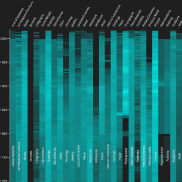
The Metropolitan Museum of Art recently published to GitHub the details of 446,029 objects from their collection.
This data visualisation attemts to show the distribution of the entire collection by date and to show the difference in age depending on the type of artifact. For example, the majority of vases in the collection are from around the year 300 A.D or before.
The visualisation was made using D3.js after the raw data had been consolidated into JSON using PHP.
UFWC Map
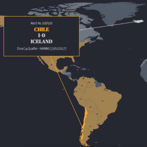
Following on from my previous UFWC data visualisation I wanted to show the progress of the Unofficial World Football Championship using an animated interactive map.
The animation shows details of all 926 matches played so far as the map updates to show which teams have held or challenged for the title.
The visualisation was built using D3.js and JQuery and all the game data was sourced from the UFWC website.
Premier League
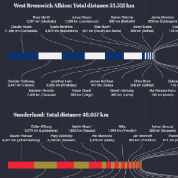
A data visualisation to show the distance travelled by each Premier League footballer to get to their current club. It shows the distance from the player's birthplace and the clubs they have been at along the way both individually and totalled for each club.
See which clubs cast their nets the furthest and which rely on the largest number of journeymen.
The visualisation was built using D3.js and JQuery and all the data was scraped from Wikipedia.
-
UFWC
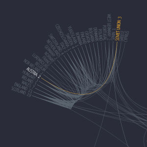
The Unofficial Football World Championships is a project by Paul Brown that tracks the World Champions of football as if the title were decided in the same way as boxing, i.e a team remains champions until they lose a game.
My data visualisation shows all of the 918 "title decider" games that have been played so far showing how thetitle has jumped from nation to nation and continent to continent.
The visualisation was built using D3.js and JQuery and all the data was sourced from the UFWC website.
-
Olympics 2016
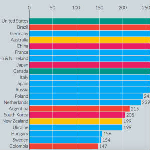
A selection of data visualisations from the 2016 Summer Olympics.
Data was either manually collected from wikipedia or scraped in real time from the BBC medal table and then stored in MySQL and formatted to CSV or JSON files.
The visualisations were built using D3.js and JQuery using some of Mike Bostock's excellent examples as a starting point.
-
Cocktail Menu

An exercise in using D3.js and SVG to create data visualisations of cocktails and their ingredients.
Inspired by this original visualisation by Tatjana Dubovina & David McCandless I wanted to make an entirely dynamically generated version.
The data was taken from Wikipedia and is served in JSON from a MySQL database.
Each visualisation is generated programmatically from the data, including the drawing of the glass outline to create a menu of over 70 cocktails.
-
Valar Morghulis
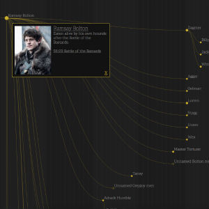
Fans of Game of Thrones know that Valar Morghulis (all men must die) but when over 200 named characters have already gone to meet The Seven (or The Old Gods, or The Drowned God, or The Lord of Light, or The Many-Faced God of Death, or the Great Stallion, etc...) then it gets hard to keep track of the tragedy.
Fortunately Maester Barefoot has created a comprehensive record of all these deaths, whether violent, very violent or extremely violent.
Valar Morghulis shows every death and who was responsibly for the slaying. A kind of "butchery tree" if you like.
The data was scraped from the excellent Game of Thrones wiki and the data representation is implemented using Mike Bostock's marvellous D3 library.
Web
Some web sites used for experimenting with various technologies.
-
MP CoMParison
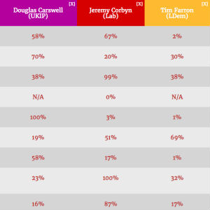
The site the Public Whip aggregates the data on how MPs in the UK parliament vote. They then group this by similar votes to provide an insight into how much each MP supports a particular policy.
The site did not provide a tool to enable users to easily compare MPs and see their relative support for each issue.
I made a small site that scrapes the data from the Public Whip and allowed the user to compare support for related policies across groups of MPs. The tool also allowed the user to select any policy or MP and add them to the comparison.
-
All The Sneakers
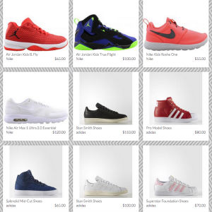
Demo search engine of sneakers collating and comparing sneakers from a number of eCommerce sites.
Regularly spiders a number of sites and compares prices where identical sneakers appear on multiple sites.
The spiders and APIs are built in PHP, the database in MySql and the front-end uses SASS for the CSS.
-
Winstagram
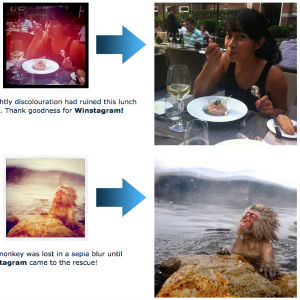
More and more people are posting photos on their social web blogs. But most of them are not very good photographers. Or have poorly made cameras. The colours come out funny, the edges are all crackly and often some of the image is out of focus.
I have developed an app to restore these poor quality photographs: Winstagram!
-
We can't go on like this
Good old David Cameron. He's so suave yet so caring. he just wants the best for the country. He says so in his lovely new poster campaign (NSFDuring lunch).
Deface David's poster with your own words with "Make your own David Cameron poster".
Go on, have a go. You know you want to. Make it look like he is saying rude words. Hurr hurr hurr!
-
Malcolm Tucker
Combines the David Cameron poster generator with the foul-mouthed tirades of Malcolm Tucker, sweary spin doctor from The Thick of It.
A random choice of blue bon-mot is substituted every time you click the "Tuckerise" button so click away. However, be warned. He is a very very rude man and if you don't like naughty words you probably won't like this.
-
Invented by the English Blog
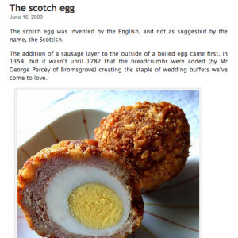
If it was invented, it was probably invented by an Englishman.
A retired blog detailing all the greatest inventions of the English.